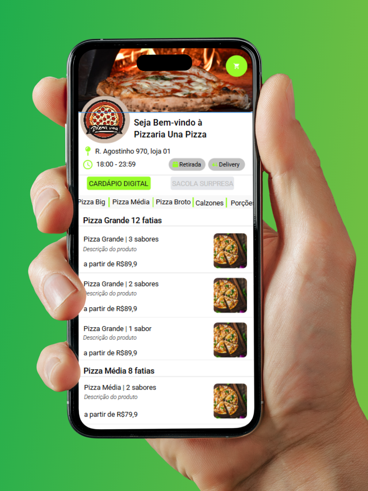
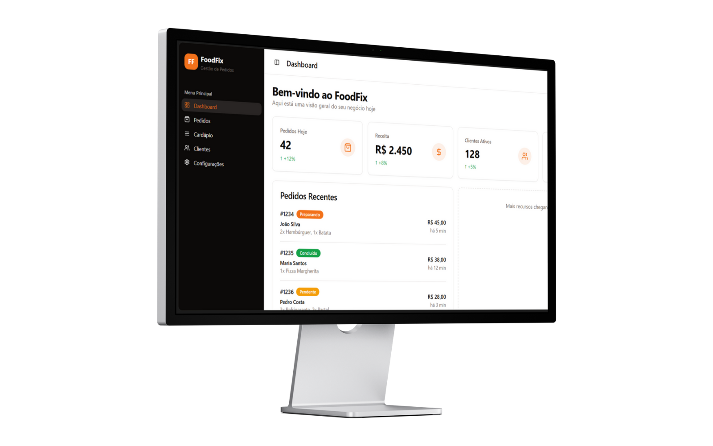

SaaS para restaurantes
Tem um restaurante?
Use a Foodfix
Modernize seu restaurante com um sistema completo de gestão. Cardápio digital, pedidos em tempo real e relatórios em uma única plataforma.
- Cardápio digital completo e personalizável
- Gestão de pedidos em tempo real
- Integração com meios de pagamento
- Suporte técnico especializado
Como funciona a Foodfix
Em poucos passos você deixa seu restaurante pronto para receber pedidos online.
Crie sua conta
Cadastre seu restaurante e configure formas de pagamento e entrega.
Monte seu cardápio digital
Adicione produtos, categorias, adicionais e fotos em poucos cliques.
Comece a receber pedidos
Seu cliente acessa o link ou QR Code e você gerencia tudo pelo painel.
Funcionalidades da Foodfix
Tudo que você precisa para organizar pedidos, cardápio e entregas em um só lugar.
Cardápio digital completo e personalizável
Seu cardápio sempre atualizado, com fotos, descrições, adicionais pagos e observações. Acesse por QR Code, link ou site do restaurante.
- Atualização de preços em tempo real
- Produtos em destaque e promoções
- Adicionais e observações por produto


Painel do lojista para controlar tudo em um só lugar
Visualize todos os pedidos, acompanhe o fluxo da cozinha, configure taxas de entrega e acompanhe o financeiro direto do painel da Foodfix.
- Pedidos em tempo real com status
- Impressão automática (cozinha e balcão)
- Resumo financeiro por período
Gestão de pedidos
Organize o fluxo da cozinha e do balcão com mais agilidade.
Delivery configurável
Taxas por bairro ou distância e opção de retirada no local.
Relatórios de vendas
Acompanhe faturamento, produtos mais vendidos e horários de pico.
Integração com pagamentos
Preparado para integração com meios de pagamento online.
Integração com entregadores
Fluxo pronto para conectar com o app dos motoboys da Foodfix.
Suporte especializado
Time pronto para ajudar na implantação e no dia a dia.
Planos simples para começar
Comece grátis e evolua conforme o crescimento do seu restaurante.
Teste gratuito
R$ 0/14 dias
- Cardápio digital completo
- Painel de pedidos
- Suporte por e-mail
Plano Profissional
R$ 99/mês
- Tudo do teste gratuito
- Relatórios avançados
- Suporte prioritário
Plano para redes
Sob consulta
- Múltiplas unidades
- Implantação dedicada
- Integrações personalizadas
Pronto para dar o próximo passo no seu restaurante?
Teste a Foodfix na prática e veja como sua operação fica mais organizada.
Fale com a gente
Quer tirar dúvidas ou agendar uma demonstração da Foodfix?
Preencha o formulário ou fale com a gente pelo WhatsApp.
Chamar no WhatsApp